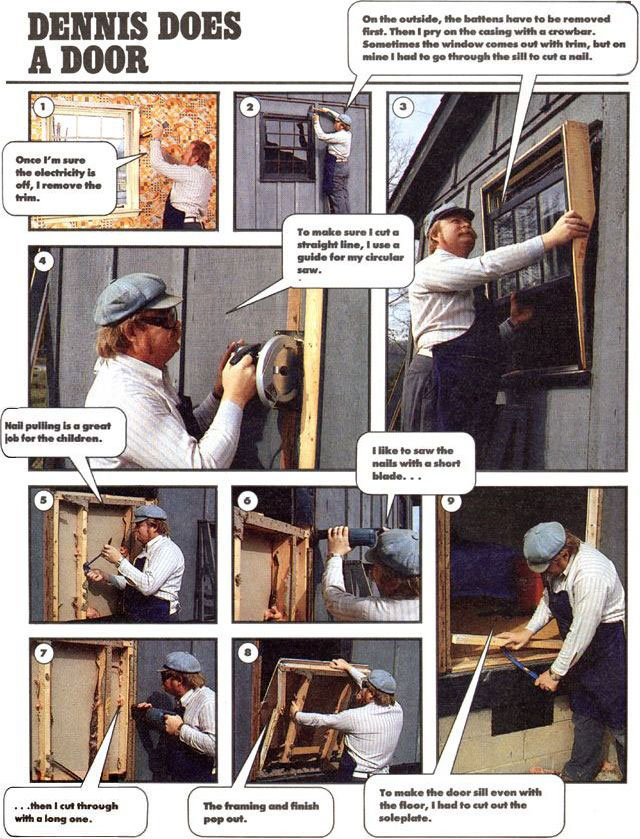
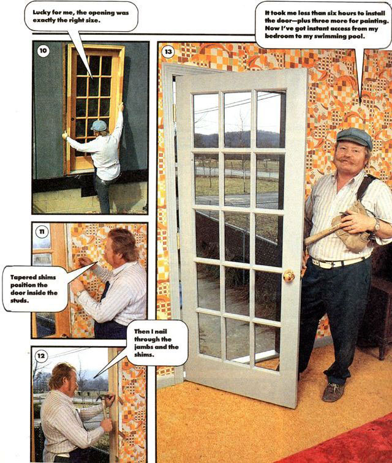

When the time comes to add on to your home-be that addition a greenhouse, a deck, a garage or a bedroom for a new arrival-you'll be forced to cut a hole in the side of your house for a door. Many people face the prospect of ripping out existing walls with a bit of trepidation. Between the siding and the dry wall lies the great unknown.
You can ease the trauma by removing a window and enlarging its opening for a door. A door that's the same width as the window can utilize the existing framing, and you'll avoid disturbing the interior or exterior finishes unduly. The tops of windows in most houses are the same height as the tops of doors, so the headers (doubled framing boards at the top) work equally well for either aperture.
Once you've found a candidate, measure from the floor to the underside of the board that the top of the window butts against to see that there's 6' 8" clearance. (If it's less than 6' 6", the job will be complicated considerably; if it's more than 6' 10", another board may have to be added to the header, and the finish above the door will have to be patched.) Most exterior doors are either 3' 0" or 2' 8" wide, so your prospect should measure at least 2' 8" inside the side jambs (the boards that the window slides or snugs against).
Preparation
Unless you're an experienced carpenter, we strongly suggest that you buy a prehung door. It comes already fitted to its frame with hinges in place and exterior trim (in the case of an exterior door), and it's often bored for the lockset. Otherwise, you'll spend at least another half day, and probably more like a whole one, fiddling with mortises for hinges, squaring the frame, etc. A bare door typically costs about 25% less than a prehung door, but the savings dwindle quickly as you add hinges, a threshold and jambs. The exterior 15-pane French door we installed cost $125 alone or $165 prehung. If you plan to paint the doorjambs, ask for a less costly finger-jointed frame.
A reciprocating saw (see issue 104 for more information) is just about indispensable in most home remodeling jobs, and this one is no exception. It will allow you to cut through the wall's full thickness and will be a great aid in removing nails that hold the window in. You don't have to buy one, though; just plan to pay about $20 to rent one for the day.
With a prehung door, this is an easy one-day project.
Ask your local tool rental shop for a reciprocating saw (or a Sawzall, Milwaukee Tool Company's trademark) with a variable-speed trigger. Buy a couple of long 5-tooth-per-inch tearout blades and a couple more hacksaw blades.
Spend a little time a few days before D (destruction) Day ferreting out your house's wiring. Use an inexpensive circuit tester (they're often called wiggies and sell for about $3) to see which circuit breakers control the outlets and switches in the wall you'll be operating on. The object is to guess whether there's a wire running under the window. If so, you'll have to be skilled enough to deal with it or prepared to hire an electrician. If you have doubts, call in a pro.
If you're new to this remodeling business, you'll be surprised how simple this job can be. With proper preparation and the right size opening, it's an easy one-day task. A MOTHER stafer and helper installed the French door you see in the photos-a job which required that they move an electrical run-in only 5 1/2 hours.
1. Turn off any circuit breakers (or remove any fuses) that control circuits in the wall you'll be working on. Test the outlets with your wiggie to be sure they're dead.
2. With a crowbar, remove the interior trim (casing) around the window and below the sill. Back up the bar with a piece of scrap wood to avoid marring the wall.
With the trim off, look between the wall finish and the window frame to see if nails go through the jambs or sill into the framing. (Some contractors set windows solely by nailing the trim to the framing.) If you find nails, it's easiest to cut them, and the reciprocating saw with a hacksaw blade is the right tool. Run the saw slowly or the blade will dull very quickly.
3. Pry behind the exterior trim. The window may come along with it, or the trim may come off. Always suspect that you've missed a nail before you use a little too much force to get out the jambs. The window's side jambs may extend a little below the siding, so you may have to pull the top out first.
4. The width of the opening you'll need to make in the siding will depend on how the exterior trim on the door will fit to the wall. The board-and-batten siding that we dealt with is perhaps the easiest, because it allowed us to cover gaps between siding and trim by May-June 1987 simply putting battens on each side of the door. Clapboards are probably the most difficult, because the ends of the boards should butt snugly against the door trim, requiring an exact cut. Remember, if you leave a little too much siding now, you can use the door itself later as a template to make an exact cut line.
Saw away the siding below the window opening by tacking a straightedge to the siding to provide a guide for your circular saw. Measure the distance between the edge of the saw's shoe and the side of the blade (be sure it's the correct side!) to determine where the guide should be, and use a level to get it straight up and down. Set your circular saw to a depth equal to the thickness of the siding, no more! Since you're likely to find hidden nails, use a cheap (or an old) blade, and wear safety glasses.
5. Carefully remove any sheathing below the siding, and pull out the insulation from between the studs. (Save the insulation; you'll need it later.) There may be a wire running across the cavities through holes drilled in the studs. If so, it will have to be rerouted. There's no way to make a general statement about how this should be done, so we're going to leave you to your (or your electrician's) good judgment. In our case, we went below the floor, pulling back the siding on the outside of the doubled studs and drilling through the soleplate (the 2 X 4 running horizontally across the bottom).
6. From the outside, use the reciprocating saw, with a hacksaw blade too short to reach the interior dry wall, to saw through nails between the full-height side studs and the shortened ones below the window's sill. There will probably be nails angled in through the sill and set in horizontally through the studs. Again, patience will preserve the blade.
7. With a long tear-out blade, repeat the cut between the long and short studs, cutting through the dry wall on the inside. Stop short of slicing into the carpet or the soleplate. Finish the inside cut through the baseboard with a small handsaw to avoid tearing the carpet or marring the floor.
8. Pull the section of wall out from the outside by pulling on the top. There will be nails-either running up into the studs from below or angled in from the sides-that will offer resistance. Once the section comes out, cut off any protruding nails with the reciprocating saw and a hacksaw blade.
9. Measure the door frame and compare it to the opening. Will the door frame fit? (Oh please!) Will the height of the threshold be appropriate to the floor? You may have to cut out the soleplate and replace it with appropriate shims to make the door fit correctly. Are the jambs the same width as the wall? Many prehung jambs have some adjustment for wall thickness. If yours don't and they aren't right, you may have to add to the jambs with appropriate ready-made stock from the hardware store.
10. Heft the door into place from the outside (with the exterior trim on the frame). If you're using a drip edge at the top (highly recommended if the door is exposed to weather), be sure to slip it beneath the siding. Check the fit of the exterior trim to the siding, and mark any adjustments that you need to make. If everything fits well, tack a couple of nails through the trim into the frame to prevent the door from falling out.
11. Close the door in the frame, and check the gap between the door and frame all the way around. It should be between 1/16" and 1/8". If it tapers, the frame is out of square and you need to adjust it. If the jambs bow in at some point, you'll have to compensate when you shim between the jambs and framing.
12. Slip pairs of tapered door shims (you can get a package at the hardware store or simply use pieces of tapered shingle) between the jambs and framing so they will stay without falling but don't bow the door inward. If the jambs need to be bowed in or out to get the right fit to the door, adjust the shims accordingly. Use three sets of shims on each side (generally right above the hinges and in corresponding spots on the opposite jamb) and one at the top. When you're satisfied with the fit and sure the jambs are flush with the interior wall surface, nail through the jambs and shims and into the framing with finishing nails.
13. Nail the exterior trim to the frame, and seal it to the wall with caulk. Then move to the inside, and stuff the spaces between the jambs and framing with the leftover insulation. Don't force it in, or you'll bow the jambs inward. This is also a great place to use foam insulation. The last step is to apply the interior trim, cutting the baseboards to butt against the door trim.
|
 |
 |
|